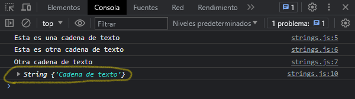
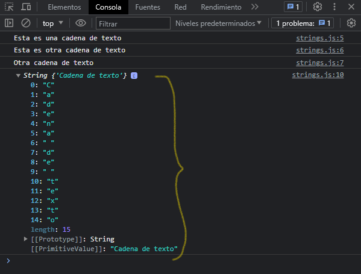
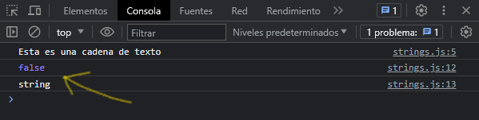
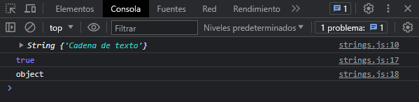

Las cadenas son utiles para almacenar datos que se pueden representar en forma de texto. Alguna de las operaciones mas utilizadas en cadenas son verificar su longitud de caracteres (length), verificar la existencia o ubicacion de subcadennas con indexOf o extraer subcadenas con el metodo substring().
Crear cadenas
Veamos como podemos crear cadenas de texto en javascript:
let texto = "Esta es una cadena de texto"
let textoII = 'Esta es otra cadena de texto'
let textoIII = `Otra cadena de texto`
console.log(texto)
console.log(textoII)
console.log(textoIII)
Para crear una cadena de texto se puede usar comillas dobles (""), comillas simples ('') o comillas invertidas (``). Cualquiera es valida para definir una cadena de texto. En este ejemplo hemos creado cadena de texto como valor a una variable definida con let, pero, tambien podemos crearlas con el objeto String de javascript de la siguiente manera:
let textoIV = new String("Cadena de texto")
console.log(textoIV)
Resultado final mostrado por consola:
En el ultimo ejemplo creamos una cadena de texto usando el constructor del objeto String de javascript, este nos devuelve un objeto String, que no es un tipo de dato primitivo. Por eso nos lo imprime de la forma siguiente:
Para entender esto usaremos dos palabras claves, la primera, instanceof, esta se encarga de verificar si un objeto contiene la propiedad prototype de un constructor. La segunda, typeof, esta se encarga de verificar el tipo de dato del objeto. Veamos que nos devuelve cuando comparamos con las cadenas de texto que hemos definido.
let texto = "Esta es una cadena de texto"
console.log(texto)
console.log(texto instanceof String)
console.log(typeof texto)
Nos muestra lo siguiente en consola:
Usamos como ejemplo la variable que definimos como una cadena de texto, al verificarlo con - instanceof - nos devuelve false porque no ha sido creado con el constructor String, al verificarlo con - typeof - nos devuelve string porque a sido definido como un tipo de dato primitivo. Ahora veamos que nos devuelve cuando verificamos la cadena de texto que hemos creado con el constructor:
let textoIV = new String("Cadena de texto")
console.log(textoIV)
console.log(textoIV instanceof String)
console.log(typeof textoIV)
Nos muestra lo siguiente en consola:
Usamo como ejemplo la cadena de texto que definimos con el constructor String, al verificar con - instanceof - nos devuelve true, lo que significa que ha sido creado con el constructor de String, pero al verificarlo con - typeof - nos devuelve object, esto nos indica que no es un tipo de dato primitivo a pesar que lo hemos definido con el constructor de String, en realidad es un objeto String. Esta es la diferencia que hay cuando definimos valores con los constructores de cada objeto en javascript, sea String, Array, Date, entre otros.